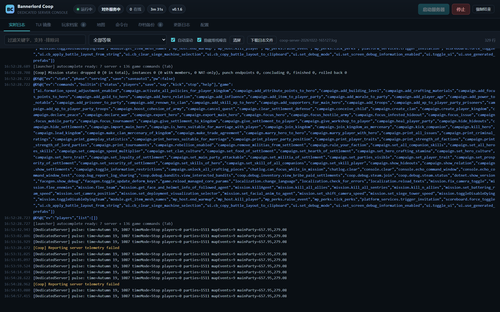
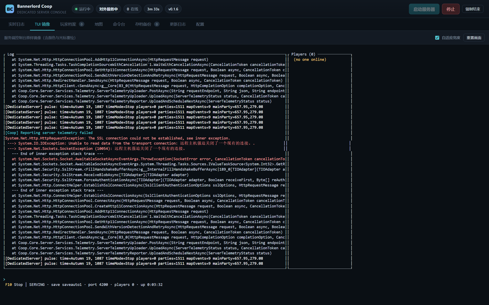
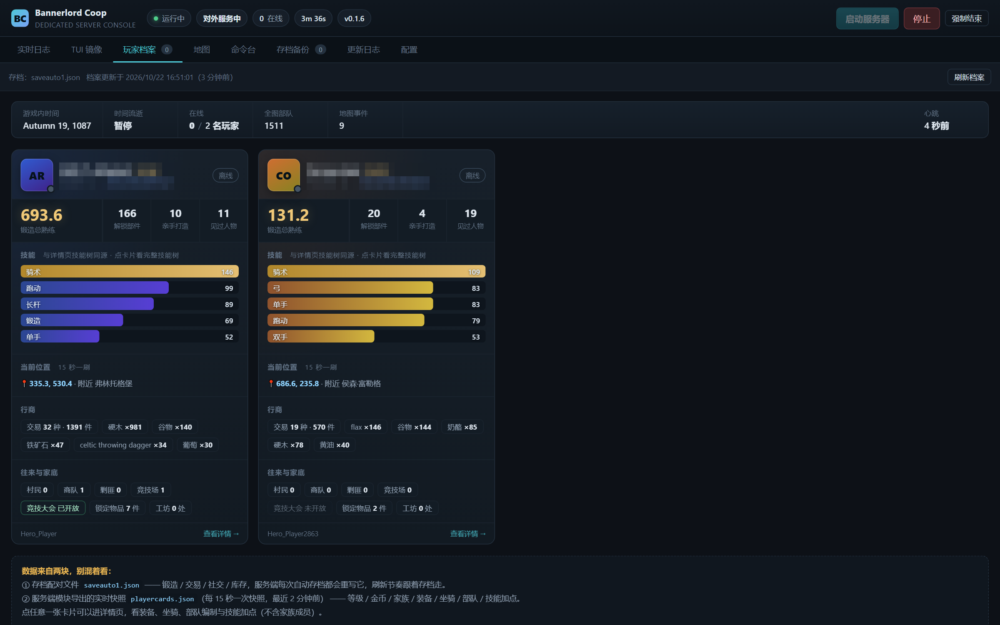
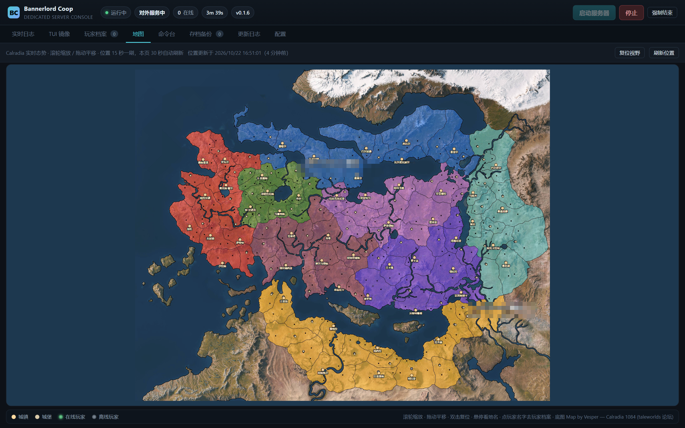
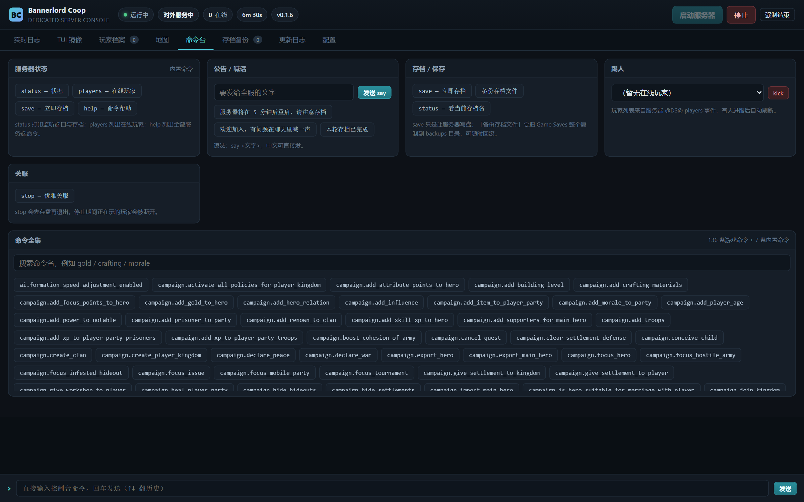
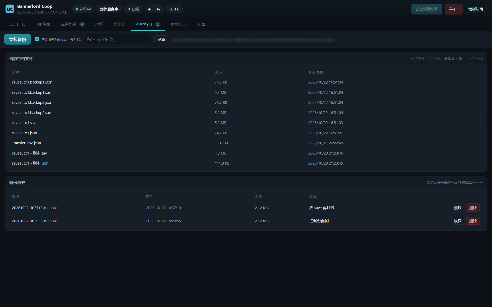
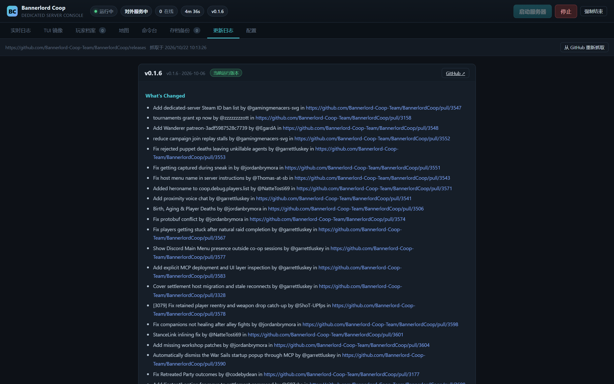
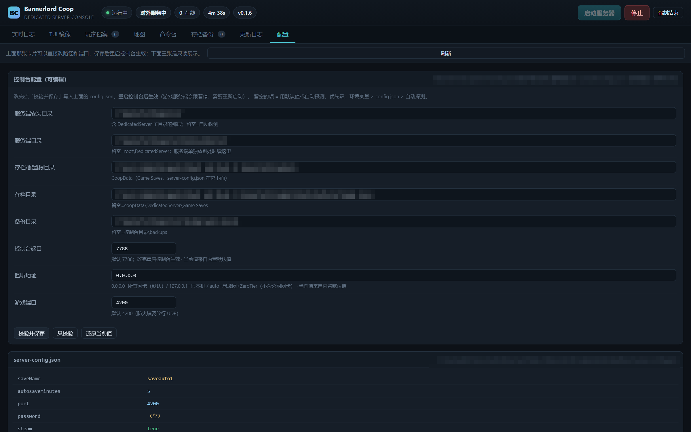

web-console 文件夹解压到一个不含中文和空格的路径下
（例如 D:\CoopConsole），双击 start-console.bat，
浏览器打开 http://127.0.0.1:7788 就能用。
路径不对时页面顶部会直接告诉你哪一项错了，不用翻日志。
Bannerlord Coop 是一个让《骑马与砍杀 2：霸主》支持多人联机的模组，它自带一个专用服务器 （Dedicated Server）。这个服务器跑起来就是一个全屏终端界面：所有操作靠敲命令， 所有信息靠滚屏。开服、停服、存档、踢人、看谁在线，全在下图这样的窗口里完成。
save，再手动去 Documents 里找文件夹打包。它是一个独立运行的本地小网站（Node.js，零前端框架），把这些事包了一层：
自己开联机服、拉朋友一起玩的人。不需要懂 Linux、不需要公网服务器， 一台常开的 Windows 电脑 + ZeroTier / 内网就能跑起来。
| 标签 | 能做什么 |
|---|---|
| 实时日志 | 把服务端输出按行显示，支持关键字过滤与 -排除词、按等级筛选（重要／警告／错误）、
一键隐藏 .NET 堆栈噪音、下载完整日志文件。载入期刷屏的引擎日志默认折叠。 |
| TUI 镜像 | 把服务端的全屏终端原样复刻成网页，颜色和布局都对。不想开两个窗口时用它看服务端在干什么。 |
| 玩家档案 | 每个玩家一张卡片：等级、锻造熟练、已解锁部件、亲手打造件数、见过的人物、 交易过的物品种类、行囊前几件、附庸/商队/工坊数量、当前位置（附最近地标）。可展开看装备、坐骑、部队、技能。 |
| 地图 | 整张卡拉迪亚底图，120 个城镇/城堡中文标注，所有玩家实时位置。支持滚轮缩放、拖拽平移、一键复位。 |
| 命令台 | 常用命令做成按钮（开服状态、存档、公告、踢人、关服），136 条游戏命令可搜索点击即填。
支持 say 发全服公告、直接敲任意控制台命令、↑↓ 翻历史。 |
| 存档备份 | 一键"先让服务器 save 再打包"，可写备注；列出所有备份（时间／大小／备注），一键恢复，可删除。 运行中恢复会被拦住，避免存档损坏。 |
| 更新日志 | 直接抓 GitHub Releases 并排版，标注"当前运行版本"，顺便提醒有没有新版本。 |
| 配置 | 服务端路径、存档目录、备份目录、控制台端口、监听地址、游戏端口，
页面上直接改，带校验和保存；下方只读展示 server-config.json 与当前路径。 |
顶部常驻五颗信息胶囊：运行状态（未运行／启动中／运行中／停止中）、阶段 （boot／loading／serving）、在线人数、运行时长、版本号； 右侧是启动服务器／停止／强制结束三个按钮。
serving
才代表世界已经载入完、玩家能连进来。从点"启动"到 serving 通常需要 55～60 秒。
| 项目 | 要求 | 说明 |
|---|---|---|
| 操作系统 | Windows 10 / 11（64 位） | 服务端本身只有 Windows 版；控制台虽然跨平台，但打包与脚本按 Windows 做的。 |
| 游戏与服务端 | Mount & Blade II: Bannerlord Native v1.4.8.118999 |
需要已安装游戏本体（Steam），且有 DedicatedServer 目录。 |
| 联机模组 | Bannerlord Coop v0.1.6 | 控制台的日志解析与状态判断按这个版本的事件格式写的。其它版本多半也能跑，
但 @DS@ 事件格式若变化，状态栏／在线人数可能不准。 |
| Node.js | 18 或更高，推荐 22 LTS | 压缩包已经带了 node_modules（含 node-pty 的 Windows 预编译二进制）， 正常情况下不需要联网、不需要编译、不需要 Visual Studio。 |
| 浏览器 | Edge / Chrome / Firefox 近两年的版本 | 界面用到 SSE 与 Canvas/SVG 绘制，IE 和很老的浏览器不行。 |
| 磁盘 | 约 200 MB | 控制台本体约 30 MB；其余是日志与备份（备份大小取决于存档体积，通常每个 30～80 MB）。 |
| 端口 | 协议 | 用途 | 默认 |
|---|---|---|---|
| 控制台 | TCP | 浏览器访问的网页端口 | 7788 |
| 游戏 | UDP | 玩家连服务器用的端口，必须放行 | 4200 |
控制台默认监听 0.0.0.0（所有网卡），所以同机器用
http://127.0.0.1:7788，同局域网／ZeroTier 用
http://本机IP:7788。启动窗口会把所有可用地址直接打印出来，复制即可。
auto（只放私有网段）；只给自己用，改成 127.0.0.1。
下面三种目录是三个不同的地方，初次使用最容易搞混：
# 1. 服务端（游戏安装目录下） D:\SteamLibrary\steamapps\common\Mount & Blade II Bannerlord\ └─ DedicatedServer\BannerlordCoopServer.exe # 2. 控制台（本压缩包，随便放哪） D:\CoopConsole\ ├─ server.js start-console.bat config.json └─ …… # 3. 存档与配置（固定跟着 Windows「文档」走） C:\Users\你的用户名\Documents\Mount and Blade II Bannerlord\CoopData\ ├─ DedicatedServer\Game Saves\ # 存档 ├─ DedicatedServer\logs\ # 服务端日志 └─ mod-config.json # 玩法配置
控制台会自动探测这三个位置：从自己所在目录往上找 5 层，看哪层有
DedicatedServer\BannerlordCoopServer.exe；存档目录按当前 Windows 用户名推算。
所以把控制台放进游戏根目录下通常什么都不用配。
把压缩包解压到不含中文、不含空格的路径，例如 D:\CoopConsole。
路径带中文有时会让 Node 的某些原生模块找不到文件，虽然多数情况没事，但没必要冒险。
在该目录按 Shift + 右键 →「在此处打开 PowerShell 窗口」，或者直接双击同目录的
check-config.bat（若包内提供了），执行：
node lib\config.js
它会逐项打印并标注 ✓ 存在 / ✗ 不存在，以及该怎么改：
✓ 配置文件 D:\CoopConsole\config.json
✓ 服务端目录 D:\SteamLibrary\…\DedicatedServer
✗ 存档目录 C:\Users\某某\Documents\…\CoopData
→ 先启动过一次服务端，或在 config.json 里写 "coopData"
双击 start-console.bat。窗口里会出现一个地址列表：
Bannerlord Coop 服务器控制台 监听 : 0.0.0.0:7788（对外） 监听来源 : 地址 = 内置默认值，端口 = 内置默认值（改 config.json 后重启生效） 本机打开 : http://127.0.0.1:7788/ 局域网 : http://<本机IP>:7788/ [WLAN] ZeroTier : http://<本机IP>:7788/ [ZeroTier One]
0.0.0.0 是监听地址，不是给你在浏览器里敲的。浏览器要敲具体那张网卡的 IP，
上面几行已经替你列好了。默认全网卡监听，不按来源 IP 过滤 —— 谁能连上这台机器的 7788
端口，谁就能打开面板。要缩窄范围请看第 09 节的 host 说明。
不要关这个黑窗口。服务端跑在它的伪终端里，窗口关掉 = 服务器一起停。 想长期挂机见第 08 节。
http://127.0.0.1:7788；要让别人连进来，游戏端口（默认 UDP 4200）必须放行。以管理员身份运行 open-firewall.bat，
它一次放行控制台 TCP 端口与游戏 UDP 端口：
open-firewall.bat :: 默认 7788 / 4200 open-firewall.bat 7788 4200 :: 自定义端口时显式指定
整个界面只有一页，八个标签，靠顶部导航切换。地址栏会记住你当前在哪个标签
（例如 http://127.0.0.1:7788/#map），可以直接收藏某一页。

| 位置 | 含义 |
|---|---|
| 左上「BC」标 | 产品标识，没有功能。 |
| 中间五颗胶囊 | 状态／阶段／在线人数／运行时长／版本。点不动，纯展示。 |
| 右上三个按钮 | 启动服务器（未运行时可用）、停止（优雅停止，会先发 stop
等它自己退，最多等 45 秒）、强制结束（前两步无效时才用，直接杀进程树）。 |
| 标签上的小数字 | 玩家档案上的数字是在线人数，存档备份上的是备份份数。 |
| 工具栏最右的灰字 | 当前日志文件名、最后更新时间这类上下文信息。 |
服务端每一行输出都会进来。默认勾选「隐藏堆栈噪音」，把 .NET 异常堆栈和载入期刷屏折叠掉。
-词 表示排除（例：player -telemetry）。
把服务端的全屏终端按字符网格还原：状态栏、日志区、玩家列表、底部命令行，位置和颜色都对齐。 服务端刷新时这里跟着刷新。
每个玩家一张卡片。数据来自两个地方：存档里的配对文件（锻造、交易、社交、行囊） 和游戏内模块每 15 秒导出一次的玩家详情（等级、家族、装备、部队、技能）。后者没部署时， 卡片仍然能显示，只是装备和技能是空的。

一张完整的卡拉迪亚地图，底图是社区制作的高清版本（见第 12 节致谢）， 上面叠了 120 个聚落的中文标注和所有玩家的实时位置。

| 操作 | 效果 |
|---|---|
| 滚轮 | 以鼠标位置为中心缩放。缩到较远时城堡名自动隐藏，避免糊成一团。 |
| 按住拖动 | 平移视野（内容跟手）。 |
| 鼠标悬停聚落/玩家 | 显示中文名（附带英文原名）。 |
| 复位视野 | 回到能看全整张地图的默认视角。 |
| 刷新位置 | 立刻重新拉一次玩家坐标，不用等自动刷新。 |
把常用操作做成按钮，剩下 136 条游戏命令做成可搜索的标签墙，点一下填进输入框，再回车发送。

| 分组 | 内容 |
|---|---|
| 服务器状态 | status 打印端口与存档名、players 列出在线玩家、help 帮助 |
| 公告 / 推送 | say 文字 向全服发一条消息；预置了几条常用公告，点一下直接发 |
| 存档 / 保存 | save 立即存档、status 查看当前存档名 |
| 踢人 | 选择在线玩家后点 kick；没人在线时显示「暂无在线玩家」 |
| 关服 | stop 优雅关服，会先存档再退出 |
| 命令全集 | 搜索框 + 全部游戏命令，点一下填入 |
campaign.add_gold_to_hero
这类作弊命令，服务端若禁用了作弊模式会直接拒绝执行，控制台会把报错原样显示出来，不会静默失败。

save，
等存档真正落盘后再把整个 Game Saves 目录打包，避免打出正在写的半份存档。直接从 GitHub Releases 抓取并排版，标注你当前跑的版本，顺便告诉你有没有新的。

最上面一张卡片可以直接改路径和端口，八项一人一行，改完点「校验并保存」。
下面三张是只读的：游戏侧的 server-config.json、玩法设置 mod-config.json、以及当前解析出的所有路径。

三个按钮：
配置只有一个文件：控制台目录下的 config.json。它可以不存在——
不存在时全部走自动探测。要生成一份带注释的模板：
node lib\config.js --init
| 字段 | 说明 | 默认 |
|---|---|---|
root | 服务端安装目录（含 DedicatedServer 子目录的那层） | 从控制台目录往上找 5 层 |
serverDir | 服务端目录本身；给了就不用 root | root\DedicatedServer |
coopData | 存档与配置根目录 | 文档\Mount and Blade II Bannerlord\CoopData |
savesDir | 单独指定存档目录 | coopData\DedicatedServer\Game Saves |
backupDir | 备份存放位置 | 控制台目录下 backups |
port | 控制台网页端口 | 7788 |
host | 控制台监听地址 | 0.0.0.0 |
gamePort | 游戏端口（防火墙要放行 UDP） | 4200 |
允许 // 注释和尾逗号，所以手改不容易出错：
{
// 服务端装在哪
"root": "D:\\SteamLibrary\\steamapps\\common\\Mount & Blade II Bannerlord",
// 默认全网卡；只想给局域网就改成 auto，只给自己用就改成 127.0.0.1
"host": "0.0.0.0",
"port": 7788,
}
| 写法 | 含义 |
|---|---|
0.0.0.0 | 默认。所有网卡，含公网网卡。局域网、ZeroTier、本机都能访问。 |
auto | 回环 + 所有私有网段（10.x / 172.16–31.x / 192.168.x / 100.64–127.x）， 公网 IP 不自动放。最稳妥的对外方式。 |
127.0.0.1 | 只有本机能访问，别人打不开。 |
127.0.0.1,192.168.1.10 | 逗号分隔，精确指定只听哪几个地址。 |
同一个配置项有多个来源时，按下面的顺序取第一个有值的：
端口 : 环境变量 COOP_CONSOLE_PORT > --port > config.json > 默认 7788 监听地址: 环境变量 COOP_CONSOLE_HOST > --host > config.json > 默认 0.0.0.0 其它路径: 环境变量 > config.json > 自动探测
页面上每栏下方那行灰字会直接告诉你「当前值来自 …」， 启动窗口也有一行「监听来源」，所以不用猜。
| 参数 | 作用 | 优先级 |
|---|---|---|
--local | 只监听 127.0.0.1（兜底默认值） | 低于 config.json |
--host 192.168.1.10 | 这一次就监听指定地址 | 高于 config.json |
--port 7790 | 使用指定端口 | 高于 config.json |
start-console.bat :: 0.0.0.0:7788（默认，全网卡） start-console.bat 7790 :: 换端口（用于开第二个只读面板） node server.js --local :: 只本机
lan 模式和配套的 start-console-lan.bat，已经删除。
默认监听地址改成 0.0.0.0 之后，全网卡本来就已经听得见，不需要再开第二个开关；
想缩窄监听范围请改 config.json 的 host（填 auto 即回环 + 私有网段）。
--port 之所以优先级高于配置文件，就是为了这个场景。
但注意第二个实例不要点"启动/停止"，它不拥有那个服务端进程。
start-console.bat，窗口留着别关；按顺序试：停止（优雅，会先存档）→ 还不停就 强制结束 → 最后才去关那个黑窗口。 反过来做最容易丢存档。
Day12 破城前；start-console.bat；
控制台跑在伪终端里，窗口关掉服务器就停。要长期开：把黑窗口最小化别关，
并在 Windows 电源设置里关掉"睡眠"，或者用计划任务在开机时拉起
start-console.bat。注意本工具不负责崩溃自动重启。
| 现象 | 先看这里 |
|---|---|
| 页面打不开 | 黑窗口还在吗？窗口里「监听」那行是哪个地址？防火墙放行了吗？ |
| 一直卡在 loading | 「TUI 镜像」看服务端在干什么；「实时日志」筛"错误"。 |
| 数据是空的 | 「配置」页的路径对不对；node lib\config.js 看哪项 ✗。 |
这是个没有任何登录界面的管理后台：谁打开这个地址，谁就能启停服务器、恢复存档、踢人、发全服公告。
默认监听 0.0.0.0 是为了"解压就能用"，代价是它能被同一网络里的任何人打开。
| 场景 | 建议 |
|---|---|
| 只在自己电脑上用 | host 改成 127.0.0.1。最简单也最安全。 |
| 自己和朋友在 ZeroTier / 家里局域网 | host 改成 auto。只放私有网段，公网网卡不监听。 |
| 机器有公网 IP | 用 auto，并且一定加访问口令（见下），或者干脆别开这个端口。 |
启动前设置环境变量 COOP_CONSOLE_TOKEN，之后所有请求都要带口令：
set COOP_CONSOLE_TOKEN=换成你的一串随机字符 start-console.bat
带口令有三种方式，任选其一：
http://127.0.0.1:7788/?token=你的口令（之后会写进 Cookie）X-Console-Tokencoop_console_token先看是不是没装 Node.js：窗口里会打印 Node.js not found。
装 Node 18 以上（推荐 22 LTS），重开即可。若装过还是闪退，
在本目录打开 PowerShell 执行 node server.js，报错会停在屏幕上。
点右上角启动服务器。控制台自己不会去拉服务端，需要你点一下。
服务端起来就崩了。切到「TUI 镜像」看最后几行，通常是：
· 游戏版本不对（需要 Native v1.4.8.118999）
· Coop 模组版本不对（需要 v0.1.6）
· 端口被占用（换个 gamePort，或先关掉占用的进程）
· 存档损坏（用「存档备份」恢复一个）
两段数据各有条件：存档配对文件要服务端存过盘、且跑过一次；玩家详情要游戏内
CoopPlayerCard 模块部署过，并且服务端跑到读档完成之后才会有。
页面底部那行小字会告诉你当前读的是哪个文件、什么时候更新的。
地图由底图 + 120 个聚落坐标组成，坐标来自服务端的 settlements.xml。
若只有底色，说明客户端没加载到 public/img/calradia.jpg——
检查压缩包是否解压完整（该文件约 2.5 MB）。
遥测上传失败，每 60 秒一次，不影响任何功能。勾上「隐藏堆栈噪音」即可。
服务端是英文环境，中文来自随包的中文语言文件。若聚落名显示英文，
说明没找到 engine\Modules\*\ModuleData\Languages\CNs，
检查 serverDir 是否指对。界面本身的中文不受影响。
换一个：start-console.bat 7790，或在「配置」页把端口改成 7790 再重启。
想找出谁占了：netstat -ano | findstr :7788。
正常。服务端跑在那个窗口的伪终端里。要长期开就别关它（最小化可以）。
因为配置在控制台启动时读进内存。改完要重启控制台（连带重启服务端）。 「配置」页每栏底部的灰字会显示「当前值来自 …」，能看出是不是被环境变量或命令行压住了。
CoopConsole\ ├─ start-console.bat 启动控制台（默认 0.0.0.0:7788，全网卡） ├─ open-firewall.bat 放行 TCP 7788 + UDP 4200（需管理员） ├─ server.js 控制台主程序 ├─ package.json ├─ config.example.json 配置示例（带注释） ├─ README.md 完整技术文档（比本手册更细） ├─ lib\ 路径解析 / PTY 进程 / 日志 / 存档 / 玩家 / 地图 ├─ public\ 前端页面、脚本、样式、卡拉迪亚底图 ├─ data\ 命令表、更新日志缓存 ├─ node_modules\ 已含 node-pty 的 Windows 预编译二进制 ├─ tools\ 自检与自测脚本 └─ docs\ 本手册 PDF 与界面截图
node lib\config.js —— 确认三个路径都是 ✓；start-console.bat —— 确认窗口里打印出了可访问地址；auto（只放内网）或 127.0.0.1（只本机）。node_modules 是 Windows x64 的预编译产物。
不需要 npm install，也不需要 Visual Studio / Python。
如果你在 ARM 版 Windows 或其它系统上跑，才需要自己重新装依赖。
直接删掉整个文件夹即可——它不写注册表、不装服务、不改系统。
唯一留在外面的是 Documents 下的 CoopData（那是游戏自己的存档，删之前想清楚）。
它只是 Bannerlord Coop 专用服务器的一个外挂式控制台，不含任何游戏本体资源。 没有 Bannerlord Coop 团队的工作，这个工具没有任何意义。
| 项目 | 说明 |
|---|---|
| Bannerlord Coop | 联机模组与专用服务器本体，本工具针对 v0.1.6（配对提交 5f4d63c）适配 |
| TaleWorlds | 《骑马与砍杀 2：霸主》及其专用服务器 |
| 卡拉迪亚底图 | Map by Vesper — “Calradia 1084”，来自 TaleWorlds 官方论坛 |
| 中文译名 | 取自官方简体中文语言包 |
| 运行时 | Node.js、node-pty（ConPTY） |
node lib\config.js 的输出。
有这三样，绝大多数问题一眼能定位。
—— 手册结束 ——